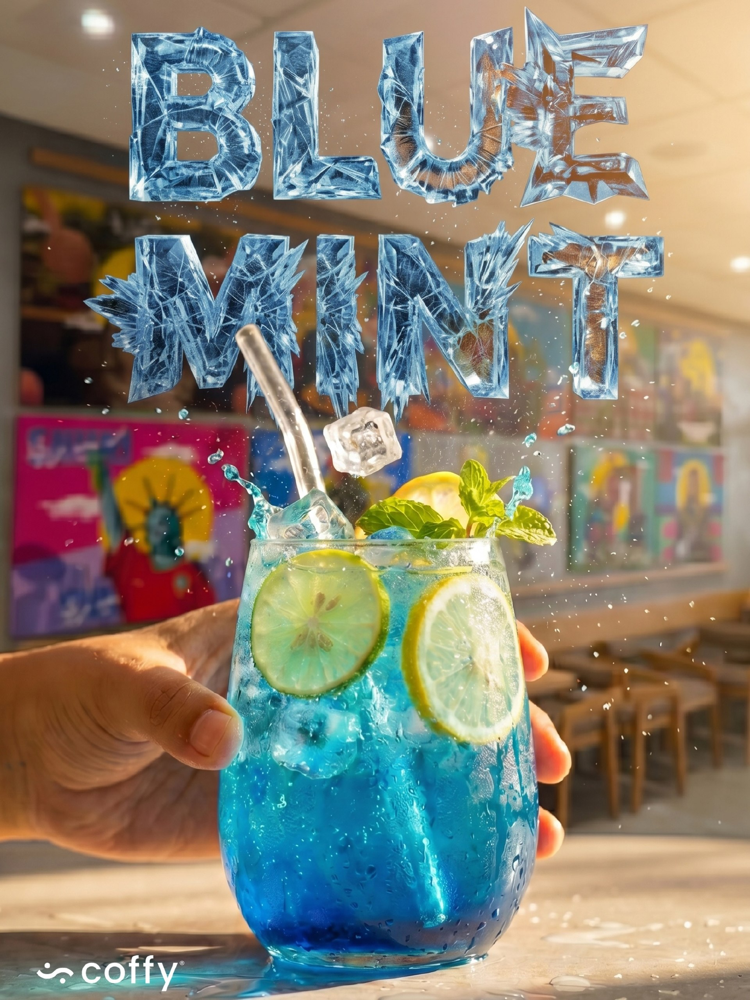

Coffy° House — Rue Ramallah 07, Abdelmoumen, Casablanca
Brunch
Specialty Coffee
Matcha
Crêpes
Un lieu pour brunch, café et matcha.
Espresso, méthodes filtre, matcha et crêpes servis dans un espace pensé pour rester — Rue Ramallah 07, Abdelmoumen, Casablanca.


Suivez-nous sur Instagram.
